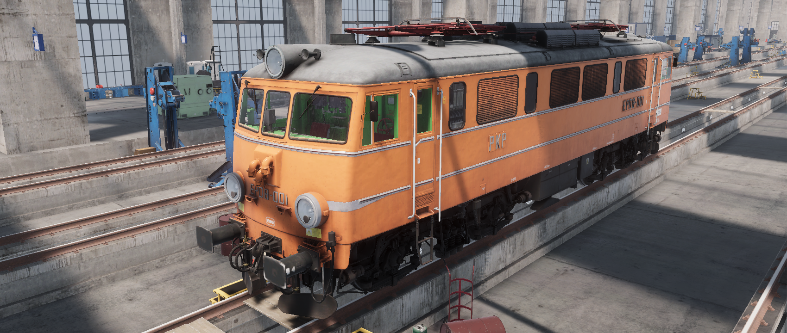

Vlaky a stanice.
Živě na mapě.
Tmavá i světlá mapa, přehledné značky vlaků, hledání a Steam avatary hráčů.
Živá mapa provozu, váš jízdní řád a hlášení.
Všechno pro SimRail na jednom místě.
Tmavá i světlá mapa, přehledné značky vlaků, hledání a Steam avatary hráčů.
Jízdní řád, rychlost a odhad zpoždění. Mobilní displej otevřete přes QR na stejné Wi-Fi.
Hlášení pokračuje i při minimalizaci. Český hlas Piper funguje po stažení offline.
Zdrojový kód, vydání i hlášení chyb najdete na GitHubu. Stažení aplikace nevyžaduje účet.
Nahlásit problém ↗
Převzetí vlaku bez ručního zadávání začátku: aktuální stanici nebo úsek určí launcher. Rádio, režim Směna a komunitní Discord zůstávají součástí aplikace.
Všechna vydání →